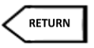

Retomar um valor de uma função |
 |

As funções podem executar cálculos que são retornados para o local onde a função foi evocada. A Instrução RETURN permite devolver um valor da função. Sempre que esta instrução é executada o função termina.
Sintaxe
Funcao
funcao <Tipo> <nome> ([= <parametro>,...,<parametro>])
<instruçoes>
retornar <*expressao*>
fim <nome>
<*expressao*> –> Expressão computacional compatível com o tipo de dados de retorno da função.
o Se a função tiver o retorno Vazio, a expressão deve ser vazia.
Exemplos
Exemplo 1 - retornar
retornar "Ola " + nome
Exemplo 2 - retornar variaveis
retornar nome
Exemplo 3 - retornar texto
retornar "Ola "
Programas
 Exemplo 1 – Retomar um valor de uma função
Exemplo 1 – Retomar um valor de uma função